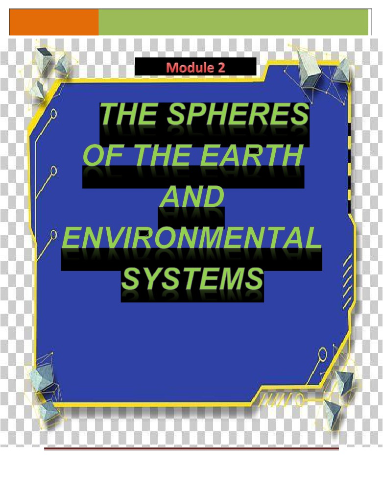
LEARNING
SURIGAO STATE COLLEGE OF TECHNOLOGY
MODULE
Prepared by:
Manny P. Eviota
GE Envi Sci Eng’g
Page 1
* keep and organize your output as a portfolio
LEARNING
SURIGAO STATE COLLEGE OF TECHNOLOGY
MODULE
TITLE:
Module 2 - The Spheres of the Earth and Environmental Systems
TOPIC:
2.1 Geosphere
2.2 Hydrosphere & Biosphere
2.3 Atmosphere
TIME FRAME: 11 hours
INTRODUCTION:
Earth consists of different spheres; this is why it is considered to be a system which
consists of four (4) parts. These parts are the biosphere, lithosphere, atmosphere and the
hydrosphere. The atmosphere contains all the gases, biosphere comprises the living creatures
both visible and not, lithosphere for the solid material that make up the earth and every liquid
molecules which comprises the totality of water, the hydrosphere.
Atmosphere is a gaseous sphere like blanket of air that enveloped the Earth. It consists
of a mixture of gases composed primarily of nitrogen, oxygen, carbon dioxide, and water vapor.
About 78 % of nitrogen, 21% of oxygen and a trace element dominated by argon about 1%. This
atmosphere is divided into sub-layers. Each later has a unique composition and functions which
is vital for the planet earth, the organisms especially to humans. If the earth was not spinning,
the wind would always blow straight from the south in the Southern Hemisphere, and from the
north in the Northern Hemisphere pushing the surface ocean currents straight as well. However,
the earth DOES spin (rotate). This turning of the earth has a very important effect on the wind,
called the Coriolis Effect, deflecting the winds and ocean currents around the earth to the right
in the Northern Hemisphere and to the left in the Southern Hemisphere. The Coriolis Effect is
zero at the equator. The Coriolis Effect states that because the Earth is spinning, surface air
and waters move in a clockwise direction in the Northern Hemisphere and in a counterclockwise
direction in the Southern Hemisphere.
Supercontinent" is a term used for a large landmass formed by the convergence of
multiple continents. The most frequently referenced supercontinent is known as "Pangaea" (also
"Pangea"), which existed approximately 225 million years ago. It is thought that all major
continents at that time were assembled into the Pangaea supercontinent. The supercontinent of
Pangaea subsequently fragmented, and the pieces now account for Earth's current continents.
The geography of Pangaea and the more recent continent movements are shown in the map
sequence on this page.
The theory of plate tectonics provides an explanation for these continent movements.
According to this theory, Earth's outer shell is divided into a series of plates. These plates
consist of the crust and a small amount of the underlying mantle. The plates slide over a weak
zone in the mantle at a rate of a few centimeters per year. Convection currents in the mantle,
caused by the escape of heat from Earth's interior, are what drives the movement of these
plates.
Water is found in the ocean, rivers, lakes, and ponds. Water exists as solid ice and in
liquid form. Nearly all of Earth’s available water is in the ocean. Most fresh water is in glaciers or
underground; only a tiny fraction is in streams, lakes, wetlands, and the atmosphere. Water
continually cycles among land, ocean, and atmosphere via transpiration, evaporation,
GE Envi Sci Eng’g
Page 2
* keep and organize your output as a
LEARNING
SURIGAO STATE COLLEGE OF TECHNOLOGY
MODULE
condensation and crystallization, and precipitation, as well as downhill flows on land. Global
movements of water and its changes in form are propelled by sunlight and gravity.
A terrarium is a closed and self-contained system. If you are building one terrarium this
is a good system to explain the hydrologic cycle in our environment. Observe carefully as the
day passes. You should notice that inside your terrarium, water will evaporate from the soil,
condense on the lid, precipitate down onto the plants and collect in the soil. This cycle will
repeat over and over again. You shouldn’t have to add any water. If students are making their
own, have them keep a scientific journal about what they notice.
Intended Learning Outcomes: Upon taking this lesson, learners will lead to:
1. discuss the origin of the continental drift how and why it happened
2. discuss the interrelationship of water to biogeochemical cycle
3. describe how each sphere related to other spheres and discuss the significance of
biogeochemical cycle
4. describe the parts of the atmosphere and infer the process of coriolis effect, the basic
properties of air and atmospheric circulation
Pre-test. Answer the questions below and make your answer brief and concise.
1. What event began to occur about 190 million years ago?
2. If mountain ranges can form where plates are colliding, what would your hypothesis
might be when plates are separating? Apply your hypothesis to identify locations on
a world map where plates might be separating (both oceanic and continental
lithospheric plate divergence zones can be identified on the map and in the flip
books). The flipbooks will help you identify previous plate separations.
3. What are the two forces involved in water cycle?
4. How important the biogeochemical cycle for you as a student upon doing the
activity?
5. What is the relationship between the direction of motion of the balloon and the wind
currents on Earth?
GE Envi Sci Eng’g
Page 3
* keep and organize your output as a
LEARNING
SURIGAO STATE COLLEGE OF TECHNOLOGY
MODULE
LEARNING ACTIVITIES:
2.1- Geosphere
About 300 million years ago, Earth didn't have seven continents, but instead one
massive supercontinent called Pangaea, which was surrounded by a single ocean called
Panthalassa. The explanation for Pangaea's formation ushered in the modern theory of plate
tectonics, which posits that the Earth's outer shell is broken up into several plates that slide over
Earth's rocky shell, the mantle.
Over the course of the planet's 3.5 billion-year history, several supercontinents have
formed and broken up, a result of churning and circulation in the Earth's mantle, which makes
up most of planet's volume. This breakup and formation of supercontinents has dramatically
altered the planet's history. This is what's driven the entire evolution of the planet through time.
This is the major backbeat of the planet," said Brendan Murphy, a geology professor at the St.
Francis Xavier University, in Antigonish, Nova Scotia.
History
More than a century ago, the scientist Alfred Wegener proposed the notion of an ancient
supercontinent, which he named Pangaea (sometimes spelled Pangea), after putting together
several lines of evidence. The first and most obvious was that the "continents fit together like a
tongue and groove," something that was quite noticeable on any accurate map, Murphy said.
Another telltale hint that Earth's continents were all one land mass comes from the geologic
record. Coal deposits found in Pennsylvania have a similar composition to those spanning
across Poland, Great Britain and Germany from the same time period. That indicates that North
America and Europe must have once been a single landmass. And the orientation of magnetic
minerals in geologic sediments reveals how Earth's magnetic poles migrated over geologic time,
Murphy said.
In the fossil record, identical plants, such as the extinct seed fern Glossopteris, are found
on now widely disparate continents. And mountain chains that now lie on different continents,
such as the Appalachians in the United States and the Atlas Mountains in Morocco, were all
part of the Central Pangaea Mountains, formed through the collision of the supercontinents
Gondwana and Laurussia. Pangaea formed through a gradual process spanning a few hundred
million years. Beginning about 480 million years ago, a continent called Laurentia, which
includes parts of North America, merged with several other micro-continents to form
Euramerica. Euramerica eventually collided with Gondwana, another supercontinent that
included Africa, Australia, South America and the Indian subcontinent.
About 200 million years ago, the supercontinent began to break up. Gondwana (what is
now Africa, South America, Antarctica, India and Australia) first split from Laurasia (Eurasia and
North America). Then about 150 million years ago, Gondwana broke up. India peeled off from
Antarctica, and Africa and South America rifted, according to a 1970 article in the Journal of
GE Envi Sci Eng’g
Page 4
* keep and organize your output as a
LEARNING
SURIGAO STATE COLLEGE OF TECHNOLOGY
MODULE
Life and climate
Having one massive landmass would have made for very different climatic cycles. For
instance, the interior of the continent may have been utterly dry, as it was locked behind
massive mountain chains that blocked all moisture or rainfall, Murphy said. But the coal deposits
found in the United States and Europe reveal that parts of the ancient supercontinent near the
equator must have been a lush, tropical rainforest, similar to the Amazonian jungle, Murphy
said. (Coal forms when dead plants and animals sink into swampy water, where pressure and
water transform the material into peat, then coal.) The coal deposits are essentially telling us
that there was plentiful life on land," Murphy told Live Science.
Climate models confirm that the continental interior of Pangaea was extremely seasonal,
The researchers in this study used biological and physical data from the Moradi Formation, a
region of layered paleosols (fossil soils) in northern Niger, to reconstruct the ecosystem and
climate during the time period when Pangaea existed. Comparable to the modern-day African
Namib Desert and the Lake Eyre Basin in Australia, the climate was generally arid with short,
recurring wet periods that occasionally included catastrophic flash floods.
Pangaea existed for 100 million years, and during that time period several animals
flourished, including the Traversodontidae, a family of plant-eating animals that includes the
ancestors of mammals.
During the Permian period, insects such as beetles and dragonflies flourished. But the
existence of Pangaea overlapped with the worst mass extinction in history, the Permian-Triassic
(P-TR) extinction event. Also called the Great Dying, it occurred around 252 million years ago
and caused most species on Earth to go extinct. The early Triassic period saw the rise of
archosaurs, a group of animals that eventually gave rise to crocodiles and birds, and a plethora
of reptiles. And about
230 million years ago some of the earliest dinosaurs emerged on
Pangaea, including theropods, largely carnivorous dinosaurs that mostly had air-filled bones
and feathers similar to birds.
Cycle in history
The current configuration of continents is unlikely to be the last. Supercontinents have
formed several times in Earth's history, only to be split off into new continents. Right now for
instance, Australia is inching toward Asia, and the eastern portion of Africa is slowly peeling off
from the rest of the continent.
Geologists have noticed that there is a quasi-regular cycle in which supercontinents form
and break up every 300 to 400 million years, but exactly why is a mystery, Murphy said. But
most scientists believe that the supercontinent cycle is largely driven by circulation dynamics in
Beyond that, the details get fuzzy. While the heat formed in the mantle likely comes from
the radioactive decay of unstable elements, such as uranium, scientists don't agree on whether
GE Envi Sci Eng’g
Page 5
* keep and organize your output as a
LEARNING
SURIGAO STATE COLLEGE OF TECHNOLOGY
MODULE
there are mini-pockets of heat flow within the mantle, or if the entire shell is one big heat
conveyor belt, Murphy said.
Current research
Scientists have created mathematical,
3D simulations to better understand the
Masaki Yoshida and M. Santhosh explain how they produced simulations of large-scale
continental movements since the breakup of Pangaea 200 million years ago. The models show
how tectonic plate motion and mantle convection forces worked together to break apart and
move large land masses. For example, Pangaea's large mass insulated the mantle underneath,
causing mantle flows that triggered the initial breakup of the supercontinent. Radioactive decay
of the upper mantle also raised the temperature, causing upward mantle flows that broke off the
Indian subcontinent and initiated its northern movement.
Yoshida and Santos created additional geological models to predict mantle convection
and continental movement patterns 250 million years in the future. These models suggest that
over millions of years, the Pacific Ocean will close as Australia, North America, Africa, and
Eurasia come together in the Northern Hemisphere. Eventually, these continents will merge,
forming a supercontinent called "Amasia." The two remaining continents, Antarctica and South
America, are predicted to remain relatively immobile and separate from the new supercontinent.
Task 1 : “Giant Pangaea”
Materials:
• a copy of the map sheets (on card stock for Figures 1A to 1E) See appendix A.
• colored pencils or crayons: red, orange, yellow, green, blue, purple and tan
• scissors
• access to a world map showing terrain, such as mountains and seafloor (an
excellent map for this purpose is This Dynamic Planet, Simkin et al., 1994,
1:30,000,000 scale. To order: U.S. Geological Survey Map Distribution;
http://pubs.usgs.gov/pdf/planet.html.)
• heavy-duty stapler
• binder clip
Directions: Follow the steps below to accomplish the task. Use the material to reconstruct and
see the picture of evolving Giant Pangea.
1. Collect copies of map sheets (See Appendix A) which have been photocopied (on
lightcardboard), each with a number of frames labeled from F1 to F20.
2. Color the framed land masses. Reconstruct maps of the landmasses that existed on
Earth at different times. The colors are as follows:
North and south America
- Yellow
Antarctica
-Blue
Australia
- Brown
Greenland
-Purple
India
- Orange
Africa
-Green
Europe & Asia
-Red
GE Envi Sci Eng’g
Page 6
* keep and organize your output as a
LEARNING
SURIGAO STATE COLLEGE OF TECHNOLOGY
MODULE
3. Cut out each frame carefully along the outside frame lines
4. Make a flipbook to observe how Pangaea breaks( F15) up into separate continents. This
serves a model of landmass movement starting from 190 million years( F1) to present
(F20).
5. Carefully align your booklet and staple securely at top or left side.
6. Use a heavy-duty stapler to with your card flipbook or you can use small binder clip.
2.2 Hydrosphere & the Biosphere
Water Cycle
Water molecules are made of hydrogen and oxygen atoms. Hydrogen and oxygen are
nutrients that organisms need. Clearly there is no problem obtaining these nutrients in aquatic
ecosystems. However, they are sometimes in short supply in terrestrial ecosystems. The
cycling of water in nature involves both aquatic and terrestrial ecosystems and the air above
them. Let’s see how this occurs: Water vapour enters the atmosphere through transpiration
from vegetation. Transpiration is the loss of water through pores in the leaves of plants. It also
enters the atmosphere through evaporation from bodies of water and the soil. In the cool
upper atmosphere this vapour condenses, forming clouds. In time, enough water collects in
the clouds to cause precipitation. When this occurs, some of the water falling on the ground
runs along the surface of the ground to a stream, pond or other body of water. This is called
surface runoff. Some of the water also soaks into the ground by a process called percolation.
Some water percolates down to the bedrock. Then it becomes ground water and gradually
runs back to lakes and other bodies of water. Some of the water in the soil moves up to the
roots of plants by capillarity. The roots absorb the water. This is how most plants get the
hydrogen and oxygen they need. Animals can obtain water by eating plants or by eating other
animals. Of course, they can also obtain water by drinking it directly from a body of water.
When plants and animals die, they decompose. During the decomposition process, the water
present in their tissues is released into the environment.
Carbon Cycle
Carbon is another nutrient that all organisms need. In fact, it is the basic building block of
all living things. Like water, carbon moves through an ecosystem in a cycle. Here is how the
cycle works in figure 1. Carbon is present in the atmosphere as carbon dioxide. Water also
contains carbon dioxide as it can dissolve it. Producers (plants and algae) use it to perform
photosynthesis and make food. Now the carbon is in the producers. Herbivores eat the plants
and carnivores eat the herbivores. Now the carbon is in animals. Both plants and animals
respire. Their respiration returns carbon dioxide to the atmosphere. Decomposers break down
dead plants and animals as well as animal waste. This too returns carbon dioxide to the
atmosphere or soil. Some organic matter does not decompose easily. Instead it builds up in the
earth’s crust. Oil and coal were formed from the build-up of plant matter millions of years ago. At
one time, the carbon cycle was almost a perfect cycle. That is, carbon was returned to the
atmosphere as quickly as it was removed. Lately, however, the increased burning of fossil fuels
has added carbon to the atmosphere faster than producers can remove it. Also, deforestation
reduces the amount of carbon dioxide being used in photosynthesis. Further, the use of land for
agriculture releases carbon dioxide into the environment. Plants in water need carbon dioxide to
perform photosynthesis and release oxygen. Fish use the oxygen to breathe and the plants for
food. Thus, fish depend on the carbon dioxide cycle.
GE Envi Sci Eng’g
Page 7
* keep and organize your output as a
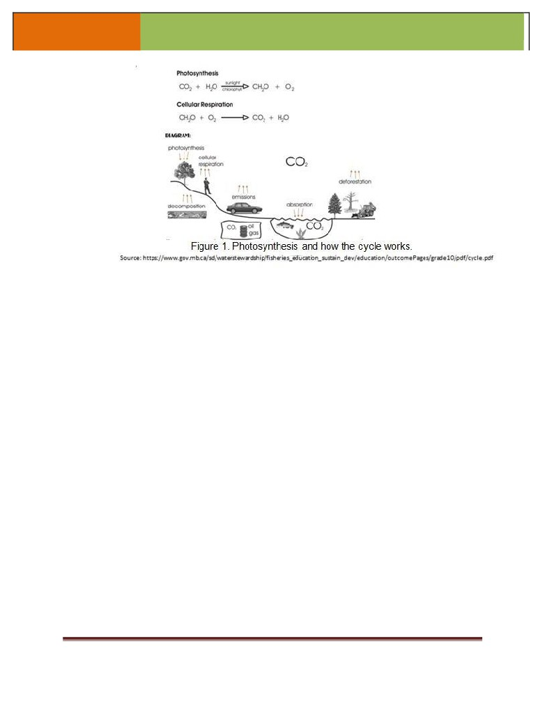
LEARNING
SURIGAO STATE COLLEGE OF TECHNOLOGY
MODULE
Nitrogen cycle
Nitrogen is another important nutrient that all organisms need. All living things need
nitrogen to make proteins. Let’s see how this nutrient is recycled in ecosystems. Almost 78% of
the atmosphere is nitrogen. However, neither plants nor animals can use this form of nitrogen
directly. Usually, the nitrogen must be in the form of chemicals called nitrate. Then the plant
roots can absorb it. Lightning forms some nitrate by causing oxygen and nitrogen in the
atmosphere to join. Rhizobium bacteria can do the same thing. This bacteria lives on the roots
of plants called legumes such as beans, peas and alfalfa). Many bacteria and blue-green algae
also form nitrates. The changing of nitrogen to nitrates is called nitrogen fixation. Plants use the
nitrates that they absorb to make plant proteins. Animals get the nitrogen that they need to
make proteins by eating plants or other animals. When plants and animals die, bacteria change
their nitrogen content to ammonia. The nitrogen in the urine and fecal matter of animals is also
changed to ammonia by bacteria. The pungent odour of outhouses, chicken pens, hog yards,
cat litter boxes and wet baby diapers is ample evidence of this fact. Ammonia, in turn, is
converted to nitrites and then to nitrates by bacteria. This process is called nitrification and
completes the main part of the cycle. Many plants are able to use ammonia directly. Therefore
all of it does not have to be converted to nitrate before plants absorb it. When people use
synthetic fertilizers they add nitrite or nitrate into the soil. This skips most of the nitrogen cycle
and thus the bacteria and microorganisms lose their food source. Plants and algae in the water
need nitrogen to grow. Some fish species depend on these plants for food.
GE Envi Sci Eng’g
Page 8
* keep and organize your output as a
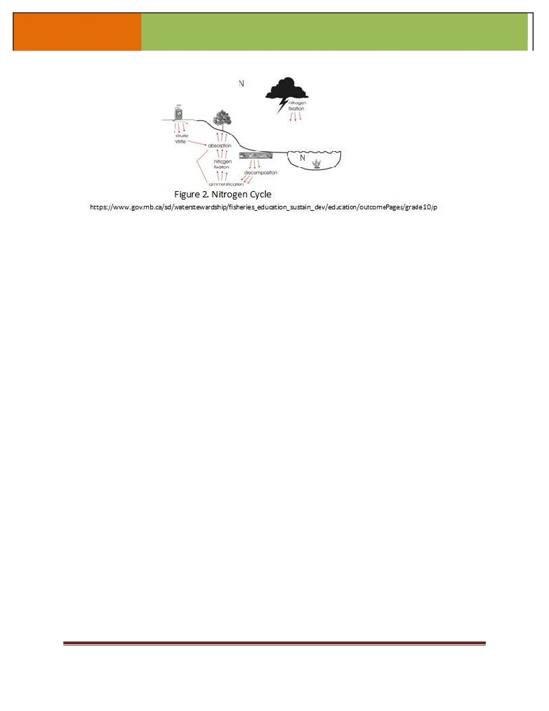
LEARNING
SURIGAO STATE COLLEGE OF TECHNOLOGY
MODULE
Task 2 - Water and the Biosphere
Materials:
•
1 large, clear tupperware container (at least 1 L) with lid per student, group or
class.
•
Gravel
•
Potting Soil
•
Powdered Charcoal
•
Small, slow growing plants or seeds
•
Water
Directions: Follow the steps below to accomplish the task. Use the material to further have a
better discussion on interrelationship of the four Earth’s spheres and Biogeochemical cycle.
1. Add about 1 inch of gravel to the bottom of your container.
2. Add about ½ inch of charcoal above the gravel.
3. Add about 2-3 inches of potting soil.
4. Carefully place 2 or 3 small plants or seeds into your soil.
5. Pour in just enough water to moisten the soil.
6. With a pencil poke a few small holes in the lid.
7. Securely fasten your lid on top of your container.
8. Place your terrarium in the sunlight
1. 3- The Atmosphere
The different layers of the atmosphere
The atmosphere can be divided into layers based on its temperature, as shown in the
figure 3 below. These layers are the troposphere, the stratosphere, the mesosphere and the
thermosphere. A further region, beginning about 500 km above the Earth's surface, is called the
exosphere.
GE Envi Sci Eng’g
Page 9
* keep and organize your output as a
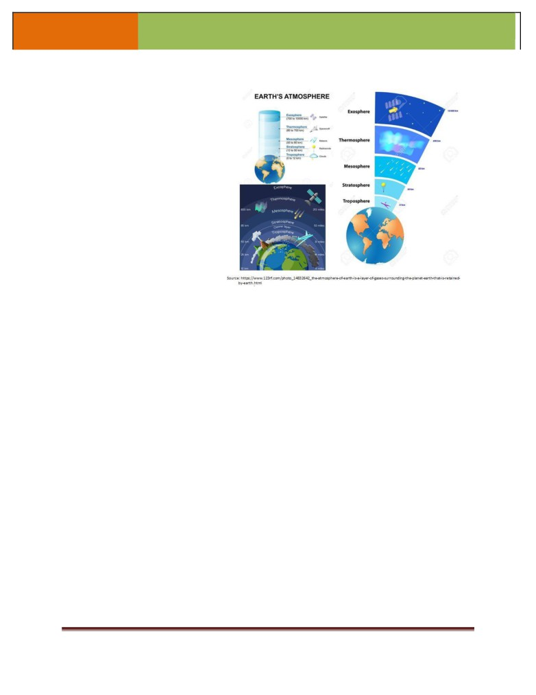
LEARNING
SURIGAO STATE COLLEGE OF TECHNOLOGY
MODULE
The Troposphere
This is the lowest part of the
atmosphere - the part we live in. It
contains most of our weather
-
clouds, rain, snow. In this part of the
atmosphere the temperature gets
colder as the distance above the
earth increases, by about 6.5°C per
kilometre. The actual change of
temperature with height varies from
day to day, depending on the
weather.
The troposphere contains
about 75% of all of the air in the
atmosphere, and almost all of the
water vapour (which forms clouds
and rain). The decrease in
Figure
3
temperature with height is a result of the decreasing
pressure.
If
a
parcel
of
air moves upwards it expands (because of the lower pressure). When air expands it cools. So
air higher up is cooler than air lower down.
The lowest part of the troposphere is called the boundary layer. This is where the air
motion is determined by the properties of the Earth's surface. Turbulence is generated as the
wind blows over the Earth's surface, and by thermals rising from the land as it is heated by the
sun. This turbulence redistributes heat and moisture within the boundary layer, as well as
pollutants and other constituents of the atmosphere. The top of the troposphere is called the
tropopause. This is lowest at the poles, where it is about 7 - 10 km above the Earth's surface. It
is highest (about 17 - 18 km) near the equator.
The Stratosphere
This extends upwards from the tropopause to about 50 km. It contains much of the
ozone in the atmosphere. The increase in temperature with height occurs because of absorption
of ultraviolet (UV) radiation from the sun by this ozone. Temperatures in the stratosphere are
highest over the summer pole, and lowest over the winter pole.
By absorbing dangerous UV radiation, the ozone in the stratosphere protects us from
skin cancer and other health damage. However chemicals (called CFCs or freons, and halons)
which were once used in refrigerators, spray cans and fire extinguishers have reduced the
amount of ozone in the stratosphere, particularly at polar latitudes, leading to the so-called
"Antarctic ozone hole". Now humans have stopped making most of the harmful CFCs we expect
the ozone hole will eventually recover over the 21st century, but this is a slow process.
GE Envi Sci Eng’g
Page 10
* keep and organize your output as a
LEARNING
SURIGAO STATE COLLEGE OF TECHNOLOGY
MODULE
The Mesosphere
The region above the stratosphere is called the mesosphere. Here the temperature
again decreases with height, reaching a minimum of about -90°C at the "mesopause".
The Thermosphere and Ionosphere
The thermosphere lies above the mesopause, and is a region in which temperatures
again increase with height. This temperature increase is caused by the absorption of energetic
ultraviolet and X-Ray radiation from the sun. The region of the atmosphere above about 80 km
is also caused the "ionosphere", since the energetic solar radiation knocks electrons off
molecules and atoms, turning them into "ions" with a positive charge. The temperature of the
thermosphere varies between night and day and between the seasons, as do the numbers of
ions and electrons which are present. The ionosphere reflects and absorbs radio waves,
allowing us to receive shortwave radio broadcasts in New Zealand from other parts of the world.
The Exosphere
The region above about 500 km is called the exosphere. It contains mainly oxygen and
hydrogen atoms, but there are so few of them that they rarely collide - they follow "ballistic"
trajectories under the influence of gravity, and some of them escape right out into space.
The Magnetosphere
The earth behaves like a huge magnet. It traps electrons (negative charge) and protons
(positive), concentrating them in two bands about 3,000 and 16,000 km above the globe - the
Van Allen "radiation" belts. This outer region surrounding the earth, where charged particles
spiral along the magnetic field lines, is called the magnetosphere.
Task 3- “Atmosphere’s Coriolis Effect”
Materials:
1 balloon per group (2 people), 1 marker
Directions: Follow the steps below to accomplish the task. Use the material to further describe
the parts of the atmosphere in doing this activity and finally infer the process of coriolis’ effect,
the basic properties of air and atmospheric circulation.
1. Blow up a balloon and tie it off. Try to get the balloon as round as possible. (This is the
Earth.) You only get ONE balloon. Do not blow it up and pop it!
2. Estimating the middle of the balloon draw a line around the middle of the balloon. This
represents the equator.
3. Have your partner slowly rotate the balloon to the right.
4. Slowly, while the balloon is rotating, draw a line straight down from the top of the balloon
to the center (equator).
5. Now have your partner slowly rotate the balloon to the right.
6. Now draw a line from the bottom of the balloon straight up to the center (equator) as the
balloon rotates. Repeat the experiment with a different color but with the balloon
rotating to the left.
GE Envi Sci Eng’g
Page 11
* keep and organize your output as a
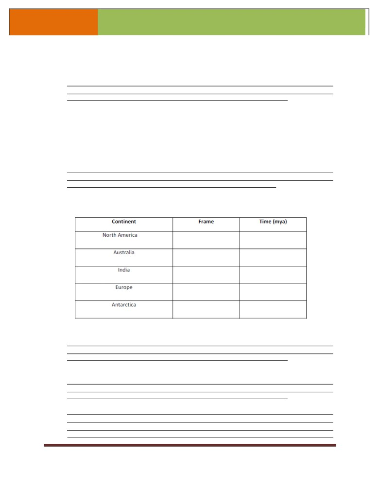
LEARNING
SURIGAO STATE COLLEGE OF TECHNOLOGY
MODULE
SELF- EVALUATION: Fill-in the table below to self-assess the lesson. Make your answer brief
but concise.
1. In which frame did you locate the final breakup of Pangaea? Why did you choose that
frame and not another?
2. Sometimes when two plates collide, the landmasses (continents) within the plates are
pushed together and a mountain range can form. Using a world map, identify two
locations where mountain ranges exist and where you hypothesis plate collisions
between continents or parts of continents have occurred. Use your flipbooks to
confirm your hypothesis. (Note that not all present-day mountain ranges were formed
by continental collision events or by plate convergence that occurred during the last
3. During your coloring of the frames, in which frame did you locate the first appearance
of the following landmasses:
4. How the container of the terrarium becomes important in giving illustration of a water
cycle?
5. If you are given a chance to take out one of the least important in biogeochemical
cycle what is it and why?
6. What happened to the line as you rotated the balloon?
GE Envi Sci Eng’g
Page 12
* keep and organize your output as a
LEARNING
SURIGAO STATE COLLEGE OF TECHNOLOGY
MODULE
7. What happens to the line as you got closer to the center of the balloon?
8. How does this activity demonstrate the Coriolis effect?
9. Who had coined the term “coriolis effect”? You may search by clicking this link on the
REVIEW OF CONCEPTS:
Troposphere. This is the lowest part of the atmosphere - the part we live in. It contains most of
our weather - clouds, rain, snow
Stratosphere. This extends upwards from the tropopause to about 50 km. It contains much of
the ozone in the atmosphere. The increase in temperature with height occurs because of
absorption of ultraviolet (UV) radiation from the sun by this ozone
Mesosphere. The region above the stratosphere is called the mesosphere. Here the
temperature again decreases with height, reaching a minimum of about -90°C at the
"mesopause".
The Exosphere. The region above about 500 km is called the exosphere. It contains mainly
oxygen and hydrogen atoms, but there are so few of them that they rarely collide - they
follow "ballistic" trajectories under the influence of gravity, and some of them escape
right out into space.
Water Cycle. Movement of water, as precipitation occurs becomes ground water and gradually
runs back to lakes and other bodies of water. Some of the water in the soil moves up to
the roots of plants by capillarity. The roots absorb the water. This is how most plants ge t
the hydrogen and oxygen they need. Animals can obtain water by eating plants or by
eating other animals. Of course, they can also obtain water by drinking it directly from a
body of water. When plants and animals die, they decompose. During the decomposition
process, the water present in their tissues is released into the environment.
The Coriolis Effect states that because the Earth is spinning, surface air and waters move in a
clockwise direction in the Northern Hemisphere and in a counterclockwise direction in the
Southern Hemisphere.
Supercontinent" is a term used for a large landmass formed by the convergence of
multiple continents. The most frequently referenced supercontinent is known as
"Pangaea" (also "Pangea"), which existed approximately 225 million years ago
GE Envi Sci Eng’g
Page 13
* keep and organize your output as a
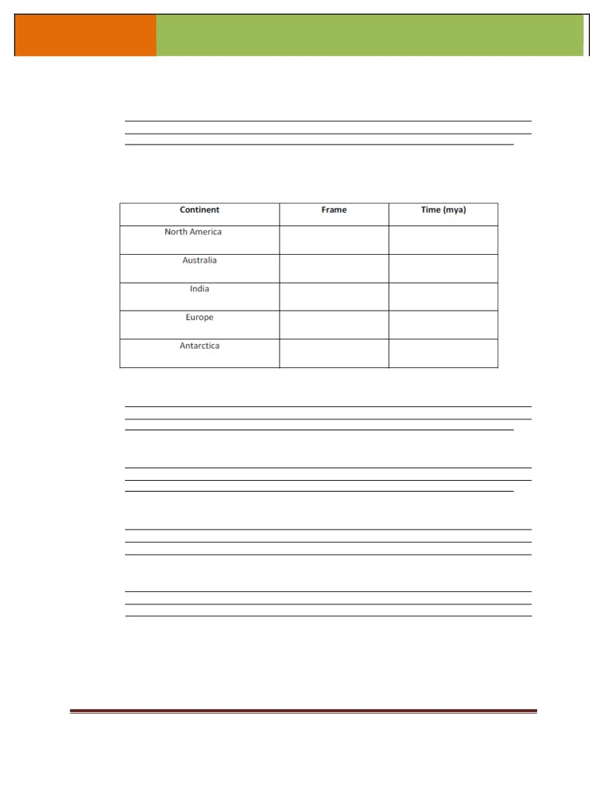
LEARNING
SURIGAO STATE COLLEGE OF TECHNOLOGY
MODULE
Post-test . Answer the questions below and make your answer brief and concise.
1. What event began to occur about 190 million years ago?
2. During your coloring of the frames, in which frame did you locate the first appearance
of the
following landmasses:
3. What are the two forces involved in water cycle?
4. How important the biogeochemical cycle for you as a student upon doing the
activity?
5. What is the relationship between the direction of motion of the balloon and the wind
currents on Earth?
6. How coriolis’ Effect explains the direction of the different monsoons, example the
northeast and the southeast monsoons?
GE Envi Sci Eng’g
Page 14
* keep and organize your output as a
LEARNING
SURIGAO STATE COLLEGE OF TECHNOLOGY
MODULE
REFERENCES:
Barry, R.G. and Chorley, R.J. (2010). Atmosphere, weather and climate. 9th ed. London:
Routledge.
Padilla, CG. (2015). Science Philippines. Essay on Science by Filipino Vol. III. Quezon City:
University of the Phils., Press.
GE Envi Sci Eng’g
Page 15
* keep and organize your output as a
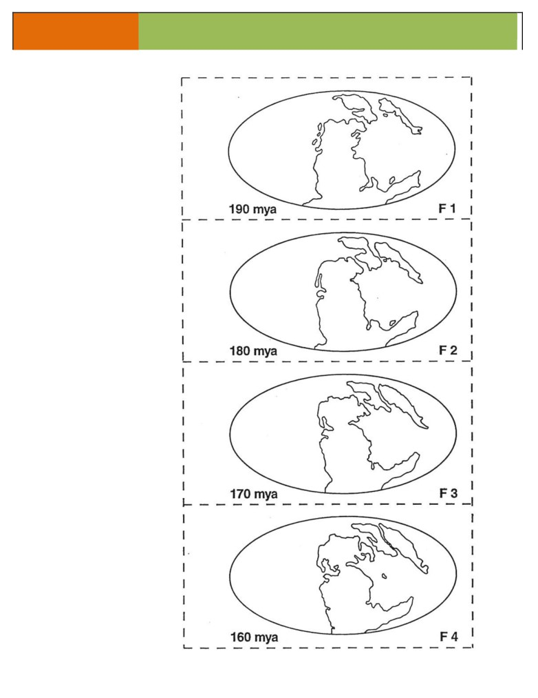
LEARNING
SURIGAO STATE COLLEGE OF TECHNOLOGY
MODULE
Appendix
A
Figure 1. Frames F1
through F20 showing
the configuration of
the continents on a
projection of the Earth
(the equator would be
a horizontal line
through the middle of
the map; the prime
meridian would be a
vertical line through
the center of the map)
from 190 million years
ago (mya) through the
present
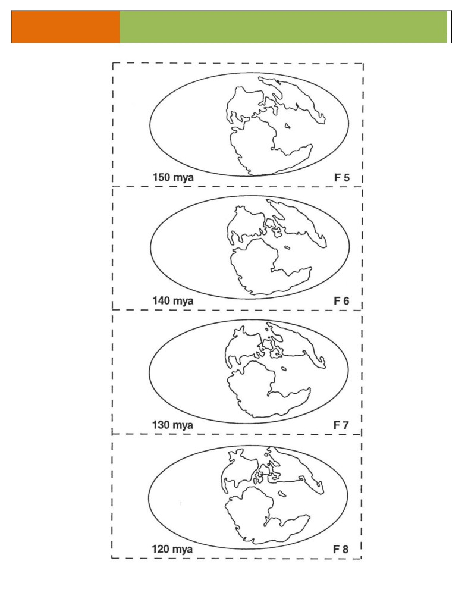
LEARNING
SURIGAO STATE COLLEGE OF TECHNOLOGY
MODULE
GE Envi Sci -
Page 17
* keep an
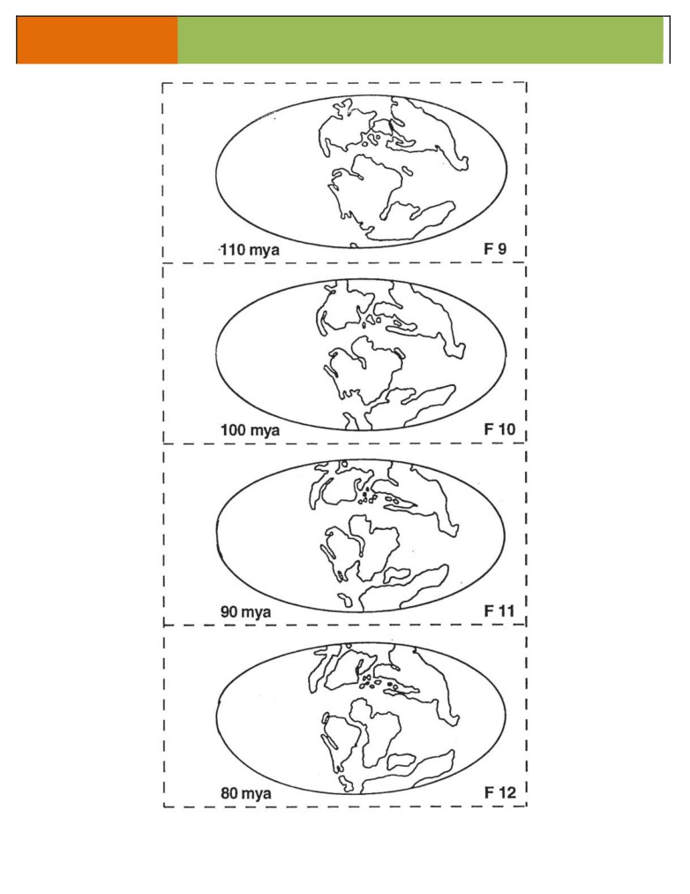
LEARNING
SURIGAO STATE COLLEGE OF TECHNOLOGY
MODULE
Page 18
* keep and organize your output as a
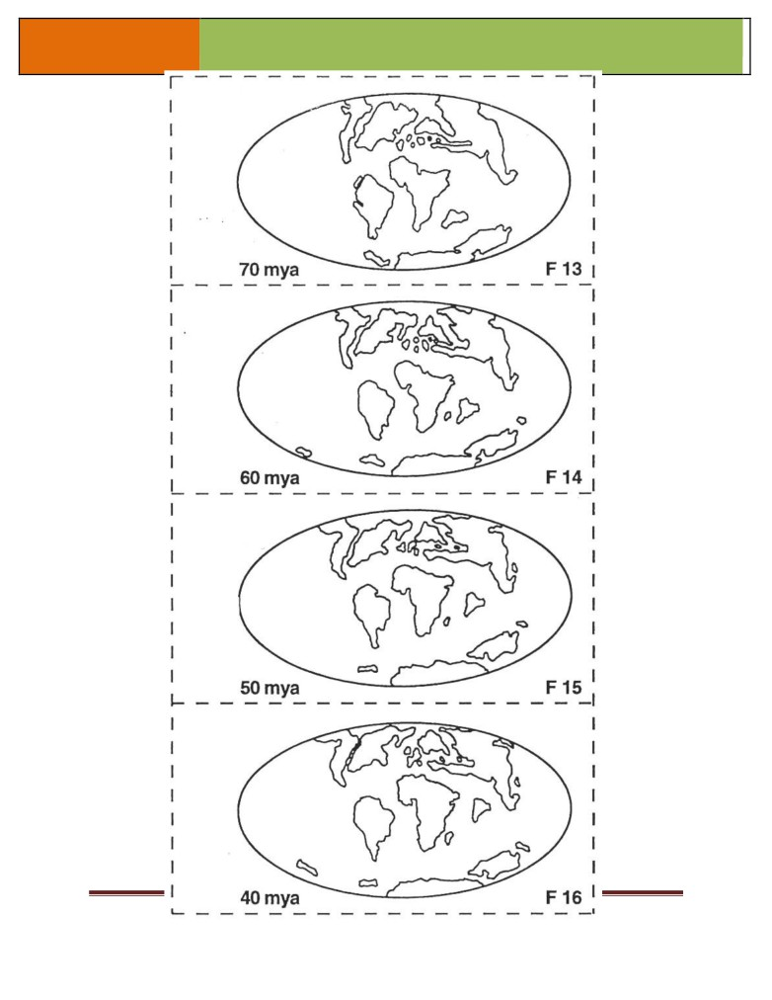
LEARNING
SURIGAO STATE COLLEGE OF TECHNOLOGY
MODULE
GE Envi Sci
Page 19
* keep and organize your output as a
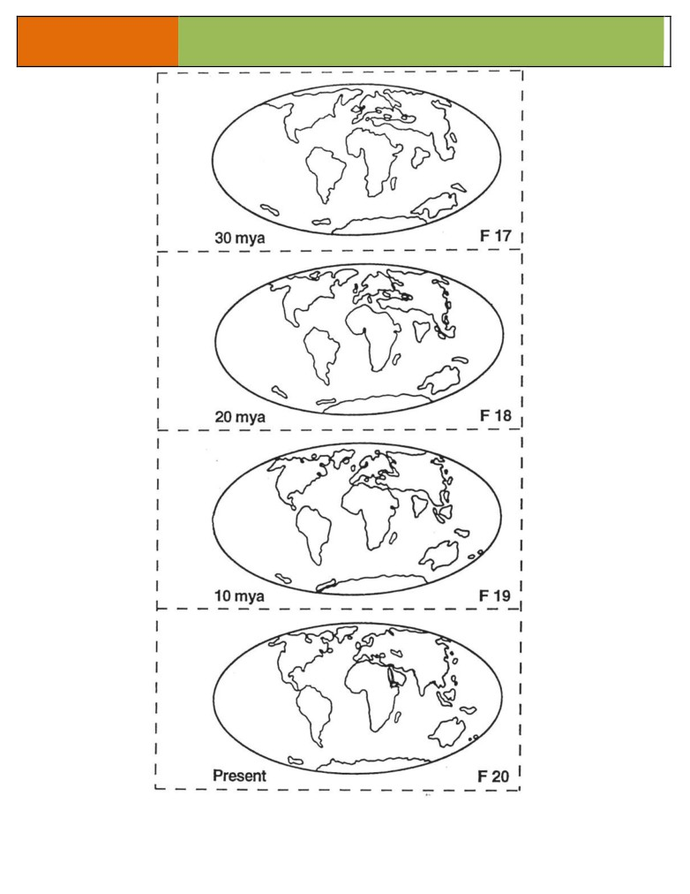
LEARNING
SURIGAO STATE COLLEGE OF TECHNOLOGY
MODULE
GE Envi Sci Eng’g
Page 20
* keep and organize your output as a